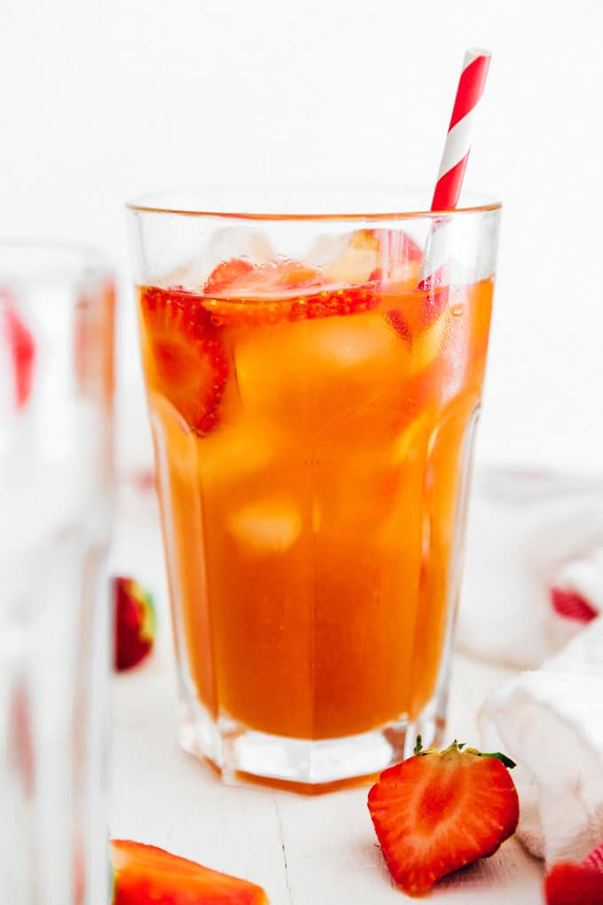

Strawberry Kombucha

This classic strawberry kombucha is so easy to make yet still tasty! It's perfect for beginners. If you want to satisfy a sweet tooth — you can always make a kombucha float) using this recipe!
Ingredients
- 1/2 gallon (1.9 L) kombucha from a first fermentation.
- 1/2 cup halved strawberries
Instructions
- Puree: Use a handheld immersion blender or countertop blender to puree strawberries until smooth (adding a splash of kombucha if needed to get things moving).
- Bottle: Transfer kombucha into fermentation bottles, leaving about 3 inches empty at the top. Evenly distribute strawberry puree into each bottle. Seal tightly.
- Ferment: Place in a dark, room temperature area for 3 to 10 days, until it reaches the carbonation level you like. This process will go faster in warmer climates, and slower in cooler climates. (Tip: In order to ensure too much pressure doesn't build in the bottles, open them once a day before tightly sealing them again.)
- Enjoy: Strain the kombucha to remove debris (optional), then chill in the fridge before serving. Can be stored in the fridge, tightly sealed, for several weeks.